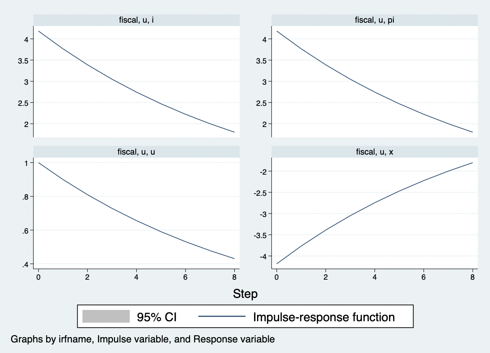
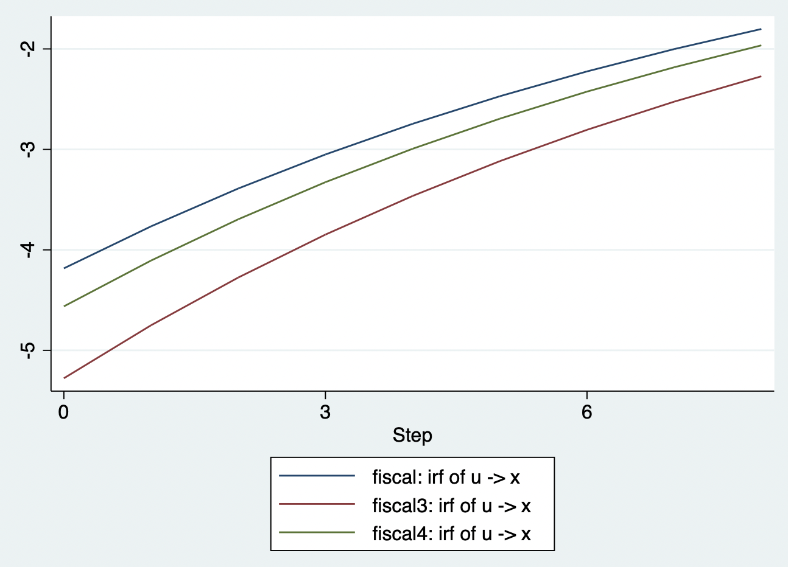
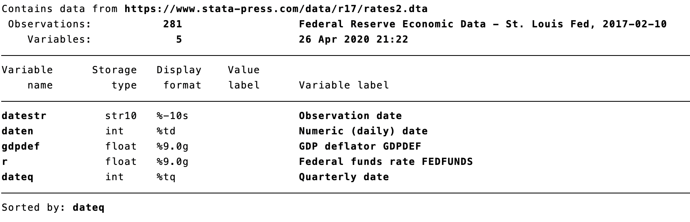
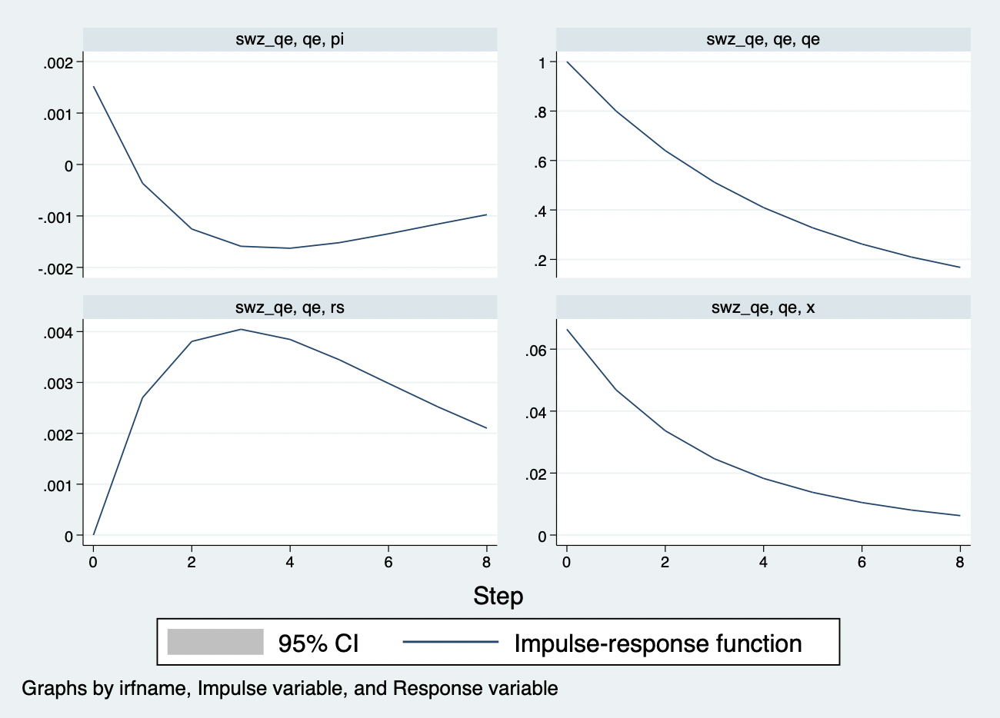

动态随机一般均衡模型
动态随机一般均衡（DSGE）模型是近40年来宏观经济学的最大进展。现在，它已经成为宏观经济和政策研究的中流砥柱，并且该方法也已经成为宏观经济学家之间交流思想观点的最重要方式（Kehoe et al.，2018；Solis-Garcia，2018）。作为回应Lucas批判（Lucas，1976）的结构宏观计量模型，DSGE模型不仅在宏观经济学专业领域广泛传播，同时，也被各国政府和国际机构用于政策分析和预测工具（Del Negro and Schorfheide，2013；Cai et al.，2018）。
但是，正如JFV et al.，（2016）指出：“对于博士研究生来说不幸，但对长期研究DSGE的研究人来说幸运的是，DSGE模型的门槛非常高。”如果DSGE对于博士研究生来说门槛都高，那么，对于本科生和硕士研究生来说鸿沟更是巨大。本讲最大的目的就在于尽量降低DSGE的门槛，从而让研究生，甚至高年级本科生都能对DSGE的理论与经验含义有直观上的感知与认识。
一方面，主流中级水平的宏观经济学教科书——Blanchard（2021）的《Macroeconomics（8th edition）》和Mankiw（2019）的《Macroeconomics（10th edition）》——已经用专门章节来阐述DSGE的基本结构和经济含义，他们均从传统的静态IS-LM-PC框架扩展到动态IS，NKPC和泰勒规则货币政策的分析框架，并包含了金融市场摩擦。另一方面，国内大部分高校均开设了以Stata软件为工具的计量经济学课程，国内学者和学生对Stata软件较为熟悉，而Stata 15开始也包含了DSGE模块，因此，基于Stata软件来实现DSGE模型的定量宏观经济与政策分析、预测等教学内容也具有事半功倍的作用。
静态IS-LM-PC模型
IS-LM模型
IS-LM模型可能是所有学过经济学的人最熟悉的内容了。提到这一分析框架，就不得不提及两个伟大的经济学家——约翰.希克斯（John Hicks）和阿尔文.汉森（Alvin Hansen）。1936年，梅纳德.凯恩斯（Maynard Keynes）出版了他的《通论》。这本书一经面世，就引起了经济学界的极大热情，虽然大家都认为这本巨作是基本原理，但内容且很令人费解。因此，许多经济学家开始解读和讨论凯恩斯到底想表达什么意思。1937年的一场学术会议上，希克斯概述了他理解的凯恩斯的主要贡献：产品和货币市场的联合描述。希克斯当时将这个联合描述用数学方程表示出来，称为“IS-LL”模型。到了1940s，汉森扩展了希克斯的分析，正式称该模型为“IS-LM”（投资-储蓄，流动性-货币）模型。宏观经济学发展了80多年，时至今日，几乎所有的初中级宏观经济学教材中都包含IS-LM模型。
在一个封闭经济环境中，产品市场的均衡是产品总供给\(Y\)等于总需求——消费\(C\)、投资\(I\)和政府购买\(G\)，即
\[\begin{equation} Y = C + I + G \end{equation}\]
其中，假设消费\(C\)是可支配收入（收入减税收，\(Y-T\)）的线性函数，即\(C=c_y (Y-T)\)，其中，\(c_y>0\)是一个参数，表示边际消费倾向。也就是说，可支配收入越高，消费越多。而且财政支出\(G\)和税收T都会通过总需求端来影响总产出。
更为重要的是，经济中的总投资\(I\)依赖于两方面的因素：
产出。 假如一个企业面临着销售增长，需要提高产量。那么，它可能需要购买额外的机器设备或者建造额外的厂房等。换言之，企业需要投资。那么，整个经济中所有的企业的投资总额也必然受到产出\(Y\)的影响。
利率。假如企业在决定是否要购买新的机器设备。此时，企业必须贷款来购买这些机器设备。那么，利率越高，企业贷款购买机器设备的成本就越高，投资就越没有吸引力。（注意，这里对金融市场做了两个假设：第一，金融市场是完美的，所有企业贷款利率均相同，且与银行的政策利率相同；第二，名义利率和实际利率没有差异。这两点假设将在引入金融市场摩擦的时候来较为详细的考察和放宽）
我们可以用下式来刻画这两个投资的影响因素：
\[\begin{equation} I = I(Y,i) \end{equation}\]
也就是说，（10.2）中的产出\(Y\)对投资是正向影响，利率\(i\)对投资是负向影响。
我们将消费和投资的决定方程带入（10.1），得到：
\[\begin{equation} Y = c_y(Y-T) + I(Y,i) + G \Leftrightarrow Y = \frac{I(Y,i)+G+c_y T}{1-c_y} \end{equation}\]
从（10.3）可以看出，利率提高，总投资会下降，从而降低产出。
下面，我们来看看货币市场。我们知道，利率是由货币的供给和需求决定的。即： \[\begin{equation} M =Y L(i) \end{equation}\]
其中，M是央行供给的货币数量。L表示货币需求函数，它由收入Y和利率i决定，收入增加会提高货币需求量，利率提高会降低货币需求量。均衡要求货币供给等于需求。那么，央行供给的货币数量一定的情况下，利率的提高会降低货币需求，进而提高总收入。
我们将产品市场均衡方程和货币市场均衡方程放在一起：
\[\begin{equation} \begin{array}{l} \text{IS曲线：} Y = \frac{I(Y,i)+G+c_y T}{1-c_y}\\ \text{LM曲线：} Y=\frac{M}{L(i)} \end{array} \end{equation}\]
我们可以将上述IS-LM曲线，作图如下：
我们可以看出，财政政策冲击、货币政策冲击等等效应。
IS-LM-PC模型
IS-LM模型关注了产品市场和货币市场的均衡。除此之外，宏观经济学还特别关心劳动市场均衡。劳动市场均衡将通胀与失业联系起来，被称为菲利普斯曲线（PC）：
\[\begin{equation} \pi -\pi^e = -\alpha(u-u_n) \end{equation}\]
其中，\(\pi\)表示通胀率，\(\pi^e\)表示通胀预期，\(u\)表示失业率，\(u_n\)表示自然失业率。（10.6）表明，当劳动市场的失业率低于自然失业率时，通胀率会高于预期通胀，反之亦然。我们为了将菲利普斯曲线与IS-LM模型结合在一起，就要将通胀表达出产出的关系，而不是失业率的关系。
首先，我们考察一下，失业率与就业之间的关系。根据定义，失业率等于失业处于劳动力：
\[\begin{equation} u = U / L = (L - N) / L = 1-N/L \end{equation}\]
其中，N表示就业，L表示劳动力。第一个等式就是失业率的定义。第二个等式是失业人数的定义，即总劳动人口减去就业人口。第三个等式是化简。我们转换（10.7）：
\[\begin{equation} N = L(1-u) \end{equation}\]
即就业等于劳动力乘以（1-失业率）。下面来看看产出：我们知道生产要投入劳动，最简单的生产函数之一就是只有劳动投入的生产函数，即
\[\begin{equation} Y=AN =AL(1-u) \end{equation}\] 其中，第二个等式就是将（10.8）带入其中。因此，当失业率等于自然率时，就业\(N_n=L(1-u_n)\)，产出等于自然产出\(Y_n =AL(1-u_n)\)。
由此，我们可以得到：
\[\begin{equation} Y -Y_n = -AL(u-u_n) \end{equation}\]
(10.10)给了我们一个简单的产出偏离与失业之间的关系。产出与自然产出之差称为产出缺口。我们将（10.6）带入（10.10）中，得到：
\[\begin{equation} \pi -\pi^e = \frac{\alpha}{ AL} (Y -Y_n) \end{equation}\]
上式就是菲利普斯曲线，也就是说，当产出高于自然产出，即产出缺口为正时，通胀会超过通胀预期，反之亦然。
将PC方程与LS-LM方程结合，记得到IS-LM-PC方程：
\[\begin{equation} \begin{array}{l} \text{IS曲线：} Y = \frac{I(Y,i)+G+c_y T}{1-c_y}\\ \text{LM曲线：} Y=\frac{M}{L(i)}\\ \text{PC曲线：} \pi -\pi^e = \frac{\alpha}{ AL} (Y -Y_n) \end{array} \end{equation}\]
如图所示：
金融市场摩擦：IS-LM-PC-FF模型
由美国次贷危机引发的2008年全球金融危机，让所有人都了解了金融市场的脆弱性与巨大破坏力。在IS-LM模型中，我们假设金融市场是完美的，没有任何风险，而且是直接融资——从资金提供者到借贷者手中。但是，实际上，许多融资活动都是通过金融中介来实现的。金融中介吸收存款或者投资者的资金，然后将其放贷给资金需求者。金融中介在经济与金融发展中起到至关重要的作用。他们为资金供需双方提供专业化的服务。在平时，金融中介的作用非常细微和顺畅。他们借钱，并发放贷款，收取中介费用——略微高于借贷利率来获得利润。然后，一旦金融部门陷入困境，就可能发生金融危机。
我们看看金融中介的资产负债表： \[\begin{tabular}{c|c} \hline 资产：100 & 负债：80\\ & 资本：20 \\ &\\ &\\ \end{tabular}\]
上面这个T表的左边是金融中介的资产，右边是金融中介的负债。也就是说，金融中介持有100块的资产，负债有存款80和自有资本20。此时，我们可以定义金融中介的资本比率等于资本/资产，例如\((20 / 100 =20\%)\)。而杠杆率则为资产比资本，即\((100 / 20 = 5)\)。金融中介必须选择杠杆率来实现两个取舍的平衡：太低的杠杆率意味着利润较低，太高的杠杆率意味着违约风险太高。
假设由于不良贷款使得金融中介的资产从100块下降到80，那么，资产减去负债就是剩余的自有资本（90-80=10）。此时，金融中介的杠杆率就从原来的5大福上升到9。虽然，银行仍然具有偿付能力，但是很明显，银行此时的风险比之前大多了。我们假设银行的不良贷款规模扩大，即资产从100下降到70，此时，金融中介就资不抵债，丧失了偿付能力，可能会破产了。那些在银行存钱的人可能就损失惨重了。为什么这件事很严重呢？因为金融中介要么保持偿付能力，要么削减贷款，甚至丧失偿付能力，尤其是削减贷款和破产都会带来极大的宏观经济损失。资产的流动性越低，打折销售，甚至违约的风险就越高。负债的流动性越高，打折销售的风险也越高，金融中介丧失偿付能力并破产的风险也越高。
另一个重要的问题就是金融风险与风险溢价。在前面的模型中，我们都是假设金融市场只有一种证券——货币，因此，它也不存在风险及风险溢价。但是，家庭或企业在金融中介贷款或者购买其他证券的时候，拿到的是货币？显然不是，这就意味着，金融市场上存在多种证券，且他们在许多方面都有所差异。尤其是，有一些证券相对于其它证券来说，具有更大的风险——债务人可能不能偿还自己的债务。为了刻画这些风险，证券的持有者要求在安全资产（例如，货币）利率之上额外增加一个风险溢价。在我们的IS-LM模型中，安全资产就是央行供给的货币，其利率就是政策利率。根据风险溢价，金融市场上，贷款人面临的市场利率肯定与政策利率不同——政策利率+风险溢价。而风险溢价由与贷款人和金融中介的相关风险有关。风险越高，或者中介的杠杆率越高，风险溢价就越高。那么，金融市场利率与政策利率之间的关系可以表示为：
\[\begin{equation} r = \chi i +e \end{equation}\]
其中，\(i\)表示政策利率，\(r\)表示市场利率，\(e\)表示金融市场健康状态。也就是说，市场利率是政策利率和金融市场健康状态的函数。而且状态\(e\)还可以控制利差，\(e\)越大，表明利差越大，意味着金融状况恶化。
将上述金融市场均衡方程与IS-LM-PC模型结合：
\[\begin{equation} \begin{array}{l} \text{IS曲线：} Y = \frac{I(Y,i)+G+c_y T}{1-c_y}\\ \text{LM曲线：} Y=\frac{M}{L(i)}\\ \text{PC曲线：} \pi -\pi^e = \frac{\alpha}{ AL} (Y -Y_n)\\ \text{FF曲线：} r = \chi i +e \end{array} \end{equation}\]
如图所示：
DSGE模型
前面的模型都是静态的，它们确实是宏观经济与政策的最简化的分析框架（Mankiw，2019）。但是，我们生活的这个世界，很显然是一个动态的环境，例如，我们永远不可能踏进同一条河流。同样地，经济也是在不断的运行发展中，所以我们必须将上述模型推广到动态环境。与此同时，这个事件还充满着不确定性和随机性。因此，我们下面就介绍一下具有动态和随机性质的宏观经济学模型——动态随机一般均衡DSGE。D就是动态Dynamic的首字母，而S是Stochastic随机的首字母，那么GE呢？它指的是一般均衡General Equilibrium的首字母。我们回忆一下，在IS-LM模型中，经济只存在产品市场和货币市场，两个市场都实现均衡就是一般均衡状态，同理，IS-LM-PC-FF模型中，就是产品市场、货币市场、劳动市场和金融市场同时实现均衡状态。
大部分计量经济学和定量社会科学的老师都不会向学生们介绍动态随机一般均衡（DSGE）模型，这是因为这类模型的解、模拟和估计技术对于非专业人员来说实在很麻烦（我的一位指导老师——西南财大的王文甫教授——曾经跟我说，有的人花了7、8年都没有入门，短的也得花个两三年）。的确，目前，几乎所有的DSGE教材都是高级版本，甚至“变态”专业版本，对于大部分老师来说实在不友好。Mario Solis-Garcia (2018)、Seth Neumuller, Casey Rothschild & Akila Weerapana (2018)就明确提出，2008年全球金融危机后，是时候给高年级本科生教授动态随机一般均衡模型入门的知识了。社会科学领域的学生和老师对stata都比较熟悉，而从stata 15开始就可以利用DSGE来进宏观经济与政策的定量分析了，因此，在高年级本科生和研究生的计量经济学和stata教学过程中，我们可以来给学生们教授动态随机一般均衡模型的知识了。从我在武汉大学攻读博士学习DSGE以来，我就一直在写论文之余，写各种DGSE的读书笔记和教学讲稿，用高年级本科生或其他入门者能看懂的内容和语言来呈现动态随机一般均衡的分析框架。本讲稿也是这个目的（可以说，我是因为向给本科生教授DSGE，才写了前面的内容）。需要强调的是，我们在讲稿中呈现的NK模型仅仅只是动态随机一般均衡分析框架的一类具体模型而已：它结合了实际经济周期（RBC）和名义与实际粘性来定量分析宏观经济的动态性质（Christiano et al.2018,JEP）。
动态IS-LM-PC模型：三方程NK
新凯恩斯主义（NK）模型的核心数学形式被称为“三方程NK”模型，该模型的优势之一就是具有坚实的微观基础，即模型经济中刻画了三类市场主体——家庭、企业和政府——的最优行为决策：（1）家庭在预算约束下做出决策，例如消费产出来实现跨期效用最大化；（2）企业设定产品价格，并生产产出来满足家庭的需求；（3）政府根据经济状态调整宏观经济政策（政策政策和货币政策等）实现经济平稳发展。
三方程NK模型是与动态AD-AS模型相对应的一个三方程简化方程组。动态总供给曲线（DAS）由新凯恩斯主义普利普斯曲线（NKPC）表示，NKPC将通胀与产出缺口和预期通胀联系在一起：
\[\begin{equation} \text{NKPC：}\pi_t =\beta E_t \pi_{t+1} + \kappa x_t + u_t \end{equation}\]
其中，与静态模型相比，模型的动态特性由于引入了预期，本讲稿中使用的是理性预期形式，在Mankiw（2019）的宏观经济学课本中使用的是适应性预期。预期主要是家庭、企业等市场主体对未来通胀率演化的无偏差预测（平均意义上来说，无偏差），例如，未来一期的通胀\(E_t \pi_{t+1}\)。\(x_t\)表示第t期的产出缺口，而\(\beta\)和\(\kappa\)表示当期通胀率\(\pi_t\)对未来通胀率的预期和产出缺口的反应系数，即两想经济状态的变化引起本期通胀率变化的敏感度。\(u_t\)表示本期的供给冲击，例如，去产能、拉闸限电、疫情导致工厂停产等都会对经济的生产活动产生影响。
动态总需求曲线（DAD）由动态IS曲线和货币政策规则组成： \[\begin{equation} \text{动态IS曲线：}x_t = E_t x_{t+1} - \alpha(i_t - E_t\pi_{t+1} )+ g_t \end{equation}\]
\[\begin{equation} \text{货币政策规则：} i_t =\phi_\pi \pi_{t} + \phi_x x_t + e_{i,t} \end{equation}\]
动态IS曲线将产出缺口\(x_t\)和对未来经济状态预期\(E_t x_{t+1}\)、未来通胀率预期\(E_t\pi_{t+1}\)和利率\(i_t\)联系起来。从（13.16）可知，市场看好中国未来的经济发展（\(E_t x_{t+1}\)变大），就会增加我们当期的总支出（\(x_t\)），因为市场上的家庭和企业等都会觉得未来自己会赚取更多的钱，所以现在可以提前“享受享受”，进而支出更多。如果我们预期未来的通胀率会上升，那么，本期的支出也会提高，这是因为理性的家庭和企业会觉得自己本期持有的100块钱，会由于通胀提高而贬值，那还不如在本期花掉。
一方面，央行采取根据（13.17）来设定货币政策利率\(i_t\)，即央行会根据经济的通胀和产出缺口状态来调整政策利率。假如通胀高于每年初全国两会政府工作报告中提出的全年通胀目标，或者经济过热，那么，货币政策可能会收紧(\(e_{i,t}\))，即央行提高利率\(i_t\)。此时，通过动态IS曲线（13.16），由于货币政策收紧，经济的产出缺口可能会缩小，进而通过NKPC（13.15）来抑制通胀率的抬升。通过这个传导途径，最终货币政策实现了《政府工作报告》中的通胀和经济发展目标。
另一方面，政府也可以通过其它需求管理政策(\(g_t\))，例如财政政策，来调节宏观经济状态。
下面，我们来分析一下财政政策和货币政策变动对宏观经济的影响及其传导机制。在利用DSGE模型进行宏观经济与政策定量分析之前，我们需要先获得模型参数。目前，获得模型参数的方式有：校准和估计两种。
第一，参数校准貌似是最为人们“嫌弃”，但又不得不用的方法。可是，我想说，这种方法在计量经济学会创会时，那些计量经济学的祖师爷们就开始在用了，而且它是所有后续方法的基石。
Kydland and Prescott（1982）用了一种方法将他们所分析的DSGE模型转换成了一种经验分析。他们所使用的方法就是校准联系。DeJong and Dave（2007）将这种方法称为矩匹配、极大似然估计和贝叶斯估计的基础。Stata目前可以提供参数校准、极大似然估计和贝叶斯估计（需要stata17版本，后面的代码如没有特别标注需要使用stata 17，则表示使用stata 16）。
我们知道，在Lucas（1976）、Sims（1980）的批判下，概率论方法的估计与假设检验对结构模型不适用。因此，校准练习的目标是为了用参数化的结构模型来探讨一些特定的定量问题。Kydland and Prescott（1991，SJE；1996，JEP）追溯了校准联系作为一种经验研究方法的历史起源，大家可以去看看。在Economitrica的创刊语中，Frisch（1933a）指出：
“……[计量经济学会]要促进那些旨在统一理论定量方法与经验定量方法的经济研究，并鼓励那些具有建设性和严谨的思考……一切旨在进一步促进经济学理论与经验相统一的活动都属于计量经济学会感兴趣的范围。”
而且，Frisch（1933b）还利用微观数据来校准了生产技术参数，并用来研究经济周期冲击的传播机制。我们都承认这种方法存在一些缺陷，尤其是关于模型误设方面。但是，正如Prescott（1986）指出：
“所有构建在理论框架之上的模型必然是一种高度抽象的东西。因此，它们肯定存在模型误设问题，统计假设检验会拒绝它们。但是，这并不意味者我们不能从这些理论定量分析中学到一些有用的信息。”
总之，校准练习肯定是一种经验工具（DeJong and Dave，2007）。Kydland and Prescott（1996，JEP）指出：“一定要注意，校准并不是为了得到某些参数的大小，即它不是估计。”因此，在校准DSGE参数的时候，通常来源于两个方面：一是长期均值；二是微观证据的经验结果（例如，Cooley and Prescott（1995）就利用了Ghez and Becker（1975）的微观证据来校准参数）。
我们先用校准方法来获得模型参数，然后用数据来估计模型参数。
三方程NK模型是由动态IS曲线、动态菲利普斯曲线和货币政策规则组成（Clarida, Galí, and Gertler，1999； Woodford，2003；Gali，2015）：
\[\begin{equation} \text{动态IS曲线：}x_t = E_t x_{t+1} - \alpha(i_t - E_t\pi_{t+1} )+ g_t \end{equation}\]
\[\begin{equation} \text{动态PC：}\pi_t =\beta E_t \pi_{t+1} + \kappa x_t + u_t \end{equation}\]
\[\begin{equation} \text{货币政策规则：} i_t =\phi_\pi \pi_{t} + \phi_x x_t+ e_{i,t} \end{equation}\]
其中，变量\(x_t\)表示产出缺口，其值为t期产出与长期自然产出只差；\(i_t\)表示名义利率，\(\pi_t\)表示通胀率。\(E_t\)表示期望算子。方程（13.18）表明产出缺口与预期未来的产出缺口和预期通胀率正相关，与名义利率负相关。在DSGE模型中，有三类时间标识：t-1表示过去，t表示当前，t+1表示未来。有三类变量：控制变量、状态变量和冲击。在一个给定时期t，状态变量是固定的，外生的；而冲击则是给定时期t实现的一个外生的变动；然后，冲击发生后，模型系统就决定了t+1期的状态变量，进而决定了当期t的控制变量的值。在上述模型中，有三个外生冲击过程（\(g_t, u_t, i_{t}\)）：
\[\begin{equation} g_t = \rho_g g_{t-1} +e_{g,t} \end{equation}\]
\[\begin{equation} u_t = \rho_u u_{t-1} +e_{u,t} \end{equation}\]
其中，\(u_t\)和\(i_t\)可以理解成财政政策和货币政策冲击。我们可以用这个模型来回答我们感兴趣的问题，例如，为了应对2008年全球金融危机，中国政府实施了4万亿刺激计划，那么，这种财政政策的宏观经济效应是什么？央行提高利率的宏观经济效应又如何？
我们用Jean-Christophe Poutineau,KarolinaSobczak and GauthierVermandel（2015）的参数来校准上述三方程NK模型的参数，如表13.1所示。然后用校准的三方程NK模型来定量分析宏观经济政策的效应。
虽然Stata的dsge命令中的solve选项可以在校准参数下解模型，但是，它仍然需要使用观测数据，只是不使用它们来估计参数。因此，我们需要首先声明时间序列数据，然后声明模型和校准的参数。
* 加载数据
use https://www.stata-press.com/data/r17/rates2, replace
* 声明时间序列数据
tsset
* 描述数据
describe
* 计算通胀率
generate pi = 400*(ln(gdpdef) - ln(L.gdpdef))
* 给pi添加标签
label variable pi "Inflation rate"
* 重命名利率
rename r i
* 声明DSGE模型
dsge (x = E(F.x) - {alpha}*(i - E(F.pi))+ g, unobserved) ///
(pi = {beta}*E(F.pi) + {kappa}*x+u) ///
(i = {phipi}*pi+{phix}*x+e) ///
(F.g = {rhog}*g, state) ///
(F.e = {rhoe}*e, state) ///
(F.u = {rhou}*u, state), ///
from(alpha=1 beta =0.99 phipi=1.5 phix=0.5 rhog=0.9 rhou=0.9 rhoe=0.9 kappa=0.13) ///
solve noidencheck第一，需要注意的是，stata中，我们需要先用dsge命令来声明模型，其命令格式为：
* dsge的命令格式
dsge (方程1)(方程2)(...)
（1）DSGE模型中有多少方程，就要在dsge命令后面写多少个方程，且每个方程都要用小括号装起来，例如，动态IS曲线(x = E(F.x) - {alpha}*(i - E(F.pi))+ g, unobserved)。且（2）预期变量用E()表示，未来一期用F.表示，例如，未来未来一期的产出缺口预期值为E(F.x)。（3）我们使用的数据是通胀率和利率，并不包含产出缺口的数据，因此，我们也要在动态IS曲线的后门声明产出缺口不可观测，即在方程后加上unobserved。（4）对于状态变量来说，它们都是前定变量，也就是在当期前就已经确定，因此，stata的命令传统就是将状态变量前看一期，例如，财政政策冲击u，虽然模型中是\(u_t\)，但在stata中，我们要将其写成\(F.u\)。（5）我们还要声明状态方程，例如，财政政策冲击方程，(F.u = {rhou}*u, state)，我们用state来声明这个方程是状态方程。
第二，声明了模型后，校准参数用from()选项来声明，括号中声明所有校准的参数，且每个参数之间要空格。
第三，最后用solve选项来解上述校准模型。此外，由于是校准模型，并不需要对参数进行识别检测，因此用noidencheck选项来跳过参数识别过程。
现在，DSGE模型解出来了。我们可以利用这个模型来看看宏观政策的效应。通常，我们用脉冲响应图来分析政策的效应：
* 创建脉冲响应图
irf set rbcirf
* 将名字为fiscal的脉冲响应增加到上述图中
irf create fiscal
* 用命令irf graph画出宏观经济变量对财政政策冲击的脉冲响应图，选项impulse()和response()分别控制着冲击和响应变量，例如，财政政策冲击u， 响应变量x,pi,i和u
irf graph irf, irf(fiscal) impulse(u) response(x pi i u) byopts(yrescale)
得到的脉冲响应图如图13.1所示。每个子图上分别为图名称，冲击变量和响应变量。每个子图都表示一种宏观经济变量对一单位财政政策冲击的响应。图13.1左下角子图y轴的“1”表示财政政策发生1单位标准偏离，在上述线性化模型中，这个更具体地表示为财政政策刺激提高1%，而其它子图则分别表示财政刺激提高1%时，产生的效应。例如，对于产出缺口来说，财政政策刺激增加1%，产出缺口立即下降了4%（如图13.1右下图所示）。看到这个结果，大家可能觉得很奇怪，这好像有点反经济直觉呀。政府的财政刺激计划怎么会让产出下降了呢？其实这也是并不违反经济直觉和理论，因为我们都学过财政刺激政策的“挤出效应”，从图13.1的左上角的利率响应图可以看到，财政刺激加强，总需求可能会暂时性提高，但利率此时也会大幅增加，从而抑制了总需求（例如，投资），从而产出下降。
除了上述总需求传导渠道外，我们还可以看到，加强财政刺激也导致了通胀率大幅上升（如图13.1右上图所示），进而从供给渠道传导至产出。
除了关注宏观经济变量第一期的响应之外，我们还需要特别关注宏观经济变量在面对财政政策冲击后的动态演化路径。从图13.1左下图结合财政政策冲击方程（13.22）可以看出，财政政策刺激只在第一期提高1%，也就是说，财政刺激是一个临时性刺激措施，但由于财政政策具有一定的持续性，因此，其刺激效应随着时间的推移逐渐递降，而其他的宏观经济变量也会随着财政刺激递降，效果也会逐渐衰退。并最终回到长期趋势水平。

在现实经济中，宏观经济条件总是不断的变化，例如，（1）每年上半年几乎都会因为“二师兄（猪）”的供给不足而导致农副产品的价格上涨，进而推动CPI上涨，这个时候，中国人民银行可能更加关注通胀，这就意味着货币政策对通胀的反应系数可能更大，假设从基准模型的\(\phi_\pi= 1.5\)上升到\(\phi_\pi= 2\)；（2）而在某些时候，经济增长会承压，这个时候央行可能又会更加关注产出，因此，货币政策对产出缺口的反应系数更大，假设从基准模型的\(\phi_x= 0.5\)上升到\(\phi_x= 0.8\)。下面我们就用stata来看看不同货币政策机制下，财政政策冲击对产出的效应。
* 将参数储存为矩阵
matrix b2 = e(b)
* 显示参数矩阵
matlist e(b)
* 二、不同的宏观经济条件，政府(例如，中国人民银行)会更加关注不同的宏观经济目标
* （一）首先，在通胀抬头的趋势下，人民银行可能会更加关注通胀率，因此，货币政策对通胀的反应系数更大，例如，从1.5增大到2；
matrix b2[1,4] = 2
* 用新的参数来运行dsge
dsge (x = E(F.x) - {alpha}*(i - E(F.pi))+ g, unobserved) ///
(pi = {beta}*E(F.pi) + {kappa}*x+u) ///
(i = {phipi}*pi+{phix}*x+e) ///
(F.g = {rhog}*g, state) ///
(F.e = {rhoe}*e, state) ///
(F.u = {rhou}*u, state), ///
from(b2) ///
solve noidencheck
* 创建新参数的脉冲响应图，命名为fiscal3
irf create fiscal3
* （二）首先，在经济增长承压时，人民银行可能会更加关注通产出，因此，货币政策对产出缺口的反应系数更大，例如，从0.5增大到0.8；
matrix b2[1,5] = 0.8
* 用新的参数来运行dsge
dsge (x = E(F.x) - {alpha}*(i - E(F.pi))+ g, unobserved) ///
(pi = {beta}*E(F.pi) + {kappa}*x+u) ///
(i = {phipi}*pi+{phix}*x+e) ///
(F.g = {rhog}*g, state) ///
(F.e = {rhoe}*e, state) ///
(F.u = {rhou}*u, state), ///
from(b2) ///
solve noidencheck
* 创建新参数的脉冲响应图，命名为fiscal4
irf create fiscal4
* 画出fiscal、fiscal3和fiscal4的脉冲响应图
irf ograph (fiscal u x irf) (fiscal3 u x irf)(fiscal4 u x irf),xlabel(0(3)8) yline(0)
结果如图13.2所示。

上述操作的3nk_simul.do可以在我的github主页上下载。
下面我们来看看利用现实数据，如何用stata估计模型参数，并进行政策分析。
我们收集处理两个指标的数据：通胀水平和利率。首先，我们要声明时间序列数据类型；第二，模型中的序列必须为零均值；第三，时间序列数据必须是弱平稳序列。
* 加载数据
use https://www.stata-press.com/data/r17/rates2, replace
* 声明时间序列数据
tsset
* 描述数据
describe
数据描述结果呈现在图13.2中。从图中我们可以看出，通胀水平用的是GDP平减指数，但上述三方程NK模型中使用的是通胀率。因此，我们首先要将原始数据转换成通胀率。

对于季度数据来说，通胀率应该等于平减指数的对数差分乘以400。下面，我们用pi来表示通胀率：
* 计算通胀率
generate pi = 400*(ln(gdpdef) - ln(L.gdpdef))
* 给pi添加标签
label variable pi "Inflation rate"
好了，数据都准备妥当！下面，我们就用stata的命令dsge来估计上述三方程NK模型的参数了。并不是所有模型参数都需要估计，通常DSGE模型的结构参数非常多，如果估计所有的参数，很有可能导致模型参数不能识别，而且一些模型参数具有经济社会含义，与经济社会的深度特征密切相关，并不会在短期内发生明显变化，因此，这些参数我们一般会校准其数值，而不进行估计。声明模型：
* 校准模型参数
constraint 1 _b[beta]=0.99
constraint 2 _b[alpha]=1
constraint 3 _b[kappa]=0.13
constraint 4 _b[phipi]=1.5
constraint 5 _b[phix]=0.5
* 用极大似然（ML）法来估计DSGE模型
dsge (x = E(F.x) - {alpha}*(i - E(F.pi))+ g, unobserved) ///
(pi = {beta}*E(F.pi) + {kappa}*x+u) ///
(i = {phipi}*pi+{phix}*x+e) ///
(F.g = {rhog}*g, state) ///
(F.e = {rhoe}*e, state) ///
(F.u = {rhou}*u, state), ///
from(rhog=0.9 rhou=0.9 rhoe=0.9) constraint(1 2 3 4 5)
估计得到模型参数后，就可以利用上述脉冲响应来进行政策分析了。
贝叶斯估计：TBA
动态IS-LM-PC-FF模型：四方程宏观金融模型
四方程宏观金融模型是由动态IS曲线、动态菲利普斯曲线、金融风险溢价方程和货币政策规则组成：
\[\begin{equation} \text{动态IS曲线：}x_t = E_t x_{t+1} - (r_t - E_t\pi_{t+1} - g_t) \end{equation}\]
\[\begin{equation} \text{动态PC：}\pi_t =\beta E_t \pi_{t+1} + \kappa x_t \end{equation}\]
\[\begin{equation} \text{金融风险溢价：}r_t =\chi i_{t} + e_t \end{equation}\]
\[\begin{equation} \text{货币政策规则：} i_t =\rho_i i_{t-1} + (1-\rho_i)(\phi_\pi \pi_{t} + \phi_x x_t) + e_{i,t} \end{equation}\]
经典论文复制1：Sims, Wu and Zhang(2021, REStat)评估非常规货币政策效应
2008年全球金融危机后，在中高级宏观经济学课本中常见的三方程NK模型已经不太适合讨论许多前沿的宏观经济与政策问题。因为它并不包含金融部门和非常规货币政策。正如上文的四方方程宏观模型所示，没有金融部门的DSGE模型没有办法定量分析金融冲击对宏观经济的影响。而为了应对金融市场运行不畅和零利率下限，全球主要发达经济体的央行都开始执行一些非常规货币政策（Walsh，2017）。现在，全球主要经济体几乎都在频繁使用非常规货币政策，例如，央行在金融市场上直接购买政府债券或者私人债券——量化宽松（QE）。目前，有大量的文献在DSGE中讨论QE的效应（e.g. Gertler and Karadi 2011, 2013; Carlstrom, Fuerst and Paustian 2017; Sims and Wu 2021等），这些研究已经证明了DSGE对于定量分析非常规货币政策非常有帮助，而且也得到了大量重要的观点与机制。为了教学演示的目的，我们选择一些非常简化、又在顶刊上发表的经典论文作为例子来使用Stata进行复制。下面，我们介绍一下Sims, Wu and Zhang（2021, REStats）的QE四方程NK模型。SWZ将复杂的QE-DSGE模型与上述课本型三方程NK模型合并在一起，其中包含金融中介、短期和长期证券、信贷市场冲击以及央行的量化宽松政策。他们的动态IS曲线和NKPC与上述经典三方程NK模型类似。差异在于，信贷冲击和央行QE既出现在IS曲线中，也出现在PC方程中。这种设定与上文的四方程宏观金融模型不一样：大部分的四方程宏观金融模型会临时性的设置一些金融冲击，通常以金融市场利率与无风险利率之间的利差冲击来表达，例如，Smets and Wouters(2007，AER)。
SWZ的四方程NK模型结构为：
\[\begin{equation} \text{动态IS曲线：}x_t = E_t x_{t+1} - \nu(r_t^s - E_t\pi_{t+1} - r_t^f) - \gamma[b_1(E_t qe_{t+1} - qe_t)+b_2(E_t \theta_{t+1}-\theta_t)] \end{equation}\]
\[\begin{equation} \text{动态PC：}\pi_t =\beta E_t \pi_{t+1} - \mu (b_1 qe_t + b_2 \theta_t) + \kappa x_t \end{equation}\]
\[\begin{equation} \text{泰勒规则：} r_t^s =\rho_r r_{t-1}^s + (1-\rho_r)(\phi_\pi \pi_{t} + \phi_x x_t) + e_{r,t} \end{equation}\]
\[\begin{equation} \text{QE政策：} qe_t =\rho_q qe_{t-1} + e_{q,t} \end{equation}\]
\[\begin{equation} \text{自然利率冲击：}r_t^f =\rho_f r_{t-1}^f + e_{f,t} \end{equation}\]
\[\begin{equation} \text{流动性冲击：}\theta_t =\rho_\theta \theta_{t-1} + e_{\theta,t} \end{equation}\]
参数校准，
stata代码：
* swz_4nk.do written by 许文立，2021-10
* SWZ(2021)
dsge (x = E(F.x)-{nu}*(rs-E(F.pi)-rf)-{lab}*({b1}*(E(F.qe)-qe)+{b2}*(E(F.thet)-thet)),unobserved) ///
(pi={beta}*E(F.pi)-{mu}*({b1}*qe+{b2}*thet)+{kappa}*x) ///
(F.rs={rhor}*rs+(1-{rhor})*({phipi}*F.pi+{phix}*F.x),state) ///
(F.qe={rhoq}*qe,state) ///
(F.rf={rhof}*rf,state) ///
(F.thet={rhot}*thet,state), ///
from(nu=0.67 lab=0.33 b1=0.3 b2=0.7 rhof=0.8 rhot=0.8 rhor=0.8 rhoq=0.8 kappa=0.214 mu=0.042 phipi=1.5 phix=0) solve noidencheck
* 创建脉冲响应图
irf set rbcirf
* 将名字为fiscal的脉冲响应增加到上述图中
irf create swz_4nk
* 用命令irf graph画出宏观经济变量对财政政策冲击的脉冲响应图，选项impulse()和response()分别控制着冲击和响应变量，例如，货币政策冲击rs， 响应变量x,pi,qe和rs
irf graph irf, irf(swz_4nk) impulse(rs) response(x pi qe rs) byopts(yrescale)
* 将名字为swz_qe的脉冲响应增加到上述图中
irf create swz_qe
* 用命令irf graph画出宏观经济变量对财政政策冲击的脉冲响应图，选项impulse()和response()分别控制着冲击和响应变量，例如，QE政策冲击qe， 响应变量x,pi,qe和rs
irf graph irf, irf(swz_qe) impulse(qe) response(qe x pi rs) byopts(yrescale)

经典论文复制2：Benigno and Fornaro(2018， RES)的凯恩斯主义增长模型
最近几年，宏观经济领域出现了一个新的趋势：经济周期与内生增长的融合，也就是宏观经济中的短期波动也会对长期增长产生影响，而增长反过来作用于经济波动，这样就为探讨稳定政策影响长期增长给出了分析框架。这个分析框架被学者们称为“凯恩斯主义增长模型”。
凯恩斯主义增长模型包含总需求方程、菲利普斯曲线、增长方程、市场出清方程和货币政策方程：
\[\begin{equation} \text{总需求方程：} y_t =\frac{g_t}{\beta E_t y_{t+1}^{-1}}\frac{\pi_t}{(1+i_t)\left(\frac{L_t}{L}\right)^\phi} \end{equation}\]
\[\begin{equation} \text{动态PC：}\pi_t =\beta E_t \pi_{t+1} + \kappa y_t \end{equation}\]
\[\begin{equation} \text{增长方程：} g_{t+1} =\beta E_t \left[\frac{y_t}{y_{t+1}}(\chi L_{t+1}+1)\right] \end{equation}\]
\[\begin{equation} \text{市场出清方程：}\Phi L_t = y_t + \frac{g_{t+1}-1}{\chi} \end{equation}\]
\[\begin{equation} \text{货币政策规则：} i_t =\rho_i i_{t-1} + (1-\rho_i)(\phi_\pi \pi_{t} + \phi_x x_t) + e_{i,t} \end{equation}\]